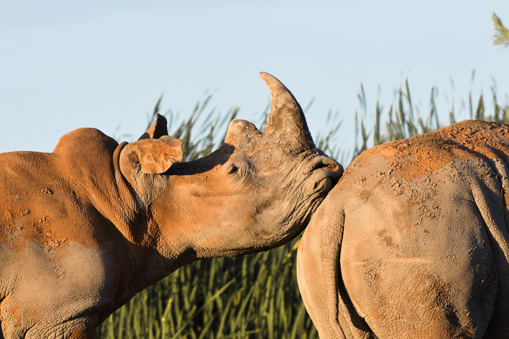

Let's talk about Endangered Species!
What are endangered species?
Endangered species are those plants and animals that have become so rare
they are in danger of becoming extinct. Threatened species are plants
and animals that are likely to become endangered within the foreseeable
future throughout all or a significant portion of its range.
Some examples can be seen below

The Asian Elephant
The Asian elephant (Elephas maximus), also known as the Asiatic
elephant, is the only living species of the genus Elephas.The Asian
elephant is the largest land mammal on the Asian continent.
Asian elephants are extremely sociable, forming groups of six to
seven related females that are led by the oldest female, the
matriarch. Like African elephants, these groups occasionally join
others to form larger herds, although these associations are
relatively short-lived. In Asia, elephant herd sizes are
significantly smaller than those of savannah elephants in Africa.
Giant Panda
The panda (Ailuropoda melanoleuca), with its distinctive black and
white coat, is adored by the world and considered a national
treasure in China. Despite their exalted status and relative lack of
natural predators, pandas are still at risk. Severe threats from
humans have left just over 1,800 pandas in the wild.
China’s Yangtze Basin region holds the panda’s primary habitat.
Infrastructure development (such as dams, roads, and railways) is
increasingly fragmenting and isolating panda populations, preventing
pandas from finding new bamboo forests and potential mates.
Cross River Gorilla
Cross River Gorilla (Gorilla gorilla diehli).
This population risks inbreeding and a loss of genetic
diversity because there are so few Cross River gorillas and they
live in groups that interact infrequently if at all. The hunting and
killing of gorillas is illegal in Cameroon and Nigeria, but
enforcement of wildlife laws is often lax.
Following
conservation efforts, hunting has declined to a low level, but any
amount of gorilla killing will have a significantly impact an
already small population.
Efforts to protect these animals are focused on securing the forests
that house them.
WWF and
partners have worked with the governments of Cameroon and Nigeria to
create a protected area for the Cross River gorilla that spans the
border of these two nations.

Orangutan
Orangutan (Pongo abelii, Pongo pygmaeus).
The name orangutan means "man of the forest" in the Malay language.
In the lowland forests in which they reside, orangutans live
solitary existences. They feast on wild fruits like lychees,
mangosteens, and figs, and slurp water from holes in trees. They
make nests in trees of vegetation to sleep at night and rest during
the day. Known for their distinctive red fur, orangutans are the
largest arboreal mammal, spending most of their time in trees. Long,
powerful arms and grasping hands and feet allow them to move through
the branches. These great apes share 96.4% of our genes and are
highly intelligent creatures.
Roughly 99 percent of threatened species are at risk because of human
activities alone.
By the early 21st century it could be said that human beings (Homo
sapiens) are the greatest threat to biodiversity!
Do you want to help save the animals?